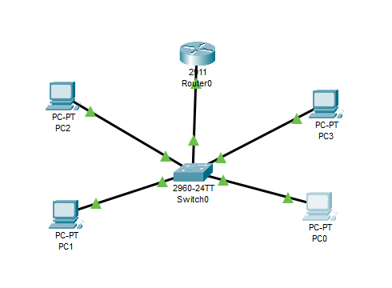
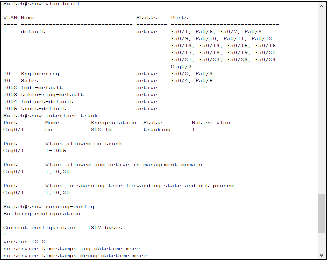
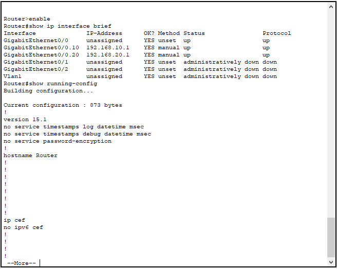
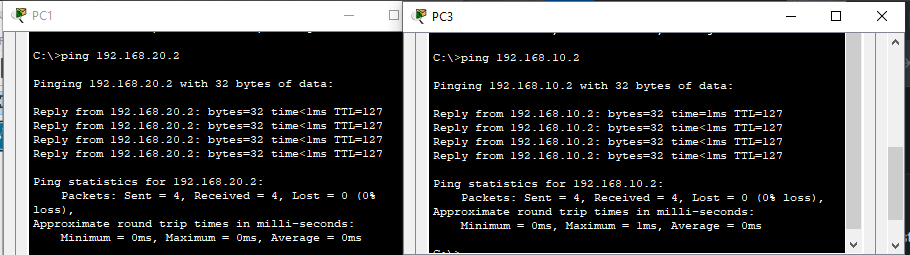

VLAN Routing Issue
Problem Description
Issue Overview:
Inter-VLAN routing problems occur when devices in different VLANs cannot communicate with each other despite being physically connected to the same network. This Layer 2/3 issue affects network segmentation and cross-VLAN communication.
Common Symptoms:
- Devices in different VLANs cannot ping each other
- Intra-VLAN communication works but inter-VLAN fails
- Default gateway unreachable from VLANs
- Trunk ports not carrying VLAN traffic
Root Causes:
- Incorrect VLAN configuration on switch ports
- Misconfigured trunk links
- Improper router subinterface setup
- Wrong IP addressing scheme
- Missing VLAN encapsulation
Network Setup

Network Components:
- 1x Cisco 2911 Router
- 1x Cisco 2960 Switch
- 4x End Devices (2 in VLAN 10, 2 in VLAN 20)
- VLAN 10: Engineering Department
- VLAN 20: Sales Department
Configuration Steps
Step 1: Switch VLAN Configuration

! Create and configure VLANs
Switch>enable
Switch#configure terminal
Switch(config)#vlan 10
Switch(config-vlan)#name Engineering
Switch(config)#vlan 20
Switch(config-vlan)#name Sales
! Configure access ports
Switch(config)#interface range fa0/2-3
Switch(config-if-range)#switchport mode access
Switch(config-if-range)#switchport access vlan 10
Switch(config)#interface range fa0/4-5
Switch(config-if-range)#switchport mode access
Switch(config-if-range)#switchport access vlan 20
! Configure trunk port
Switch(config)#interface gig0/1
Switch(config-if)#switchport mode trunk
Switch(config-if)#switchport trunk allowed vlan 1,10,20Step 2: Router Configuration

Router>enable
Router#configure terminal
! Configure main interface
Router(config)#interface GigabitEthernet0/0
Router(config-if)#no shutdown
! Configure VLAN 10 subinterface
Router(config)#interface GigabitEthernet0/0.10
Router(config-subif)#encapsulation dot1q 10
Router(config-subif)#ip address 192.168.10.1 255.255.255.0
! Configure VLAN 20 subinterface
Router(config)#interface GigabitEthernet0/0.20
Router(config-subif)#encapsulation dot1q 20
Router(config-subif)#ip address 192.168.20.1 255.255.255.0Step 3: Verification

Successful ping tests between VLANs show:
- VLAN 10 to VLAN 20 connectivity
- 0% packet loss
- Low latency (1ms response time)
- Proper inter-VLAN routing
Troubleshooting Guide
Verification Commands:
show vlan brief- Verify VLAN creation and port assignmentsshow interface trunk- Check trunk configurationshow ip interface brief- Verify interface statusshow running-config interface- Review interface settings
Common Issues and Solutions:
- Issue: VLANs not appearing in show vlan brief
Solution: Verify VLAN creation and ensure they're active - Issue: Trunk port not forwarding VLANs
Solution: Check allowed VLANs on trunk - Issue: Subinterfaces not coming up
Solution: Verify encapsulation and main interface status - Issue: Cannot ping between VLANs
Solution: Check IP addressing and gateway configuration
Packet Tracer Simulation
Download the complete Packet Tracer simulation file to practice this configuration:
Download Simulation File